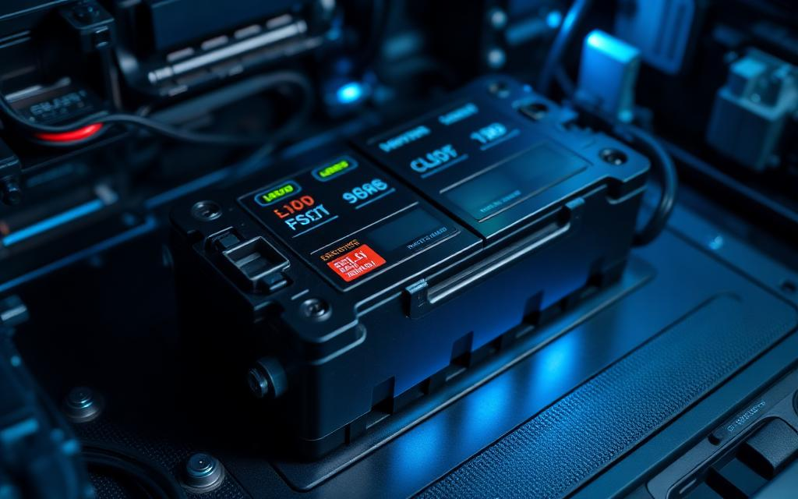
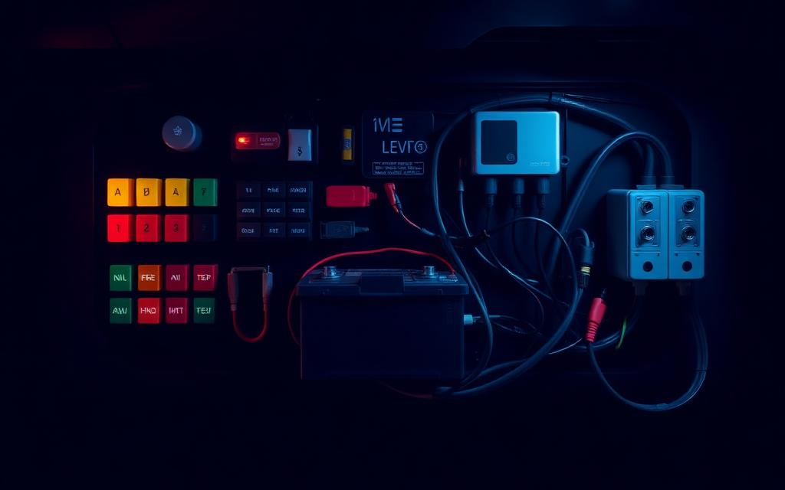
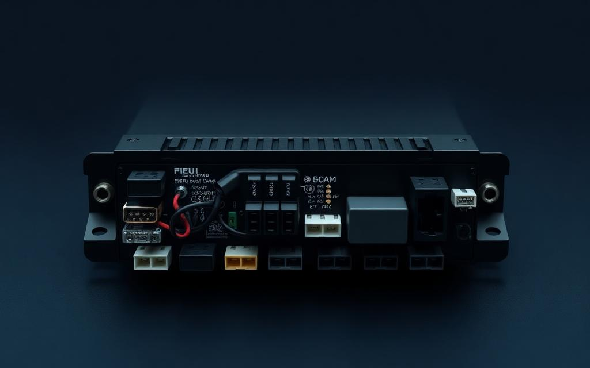
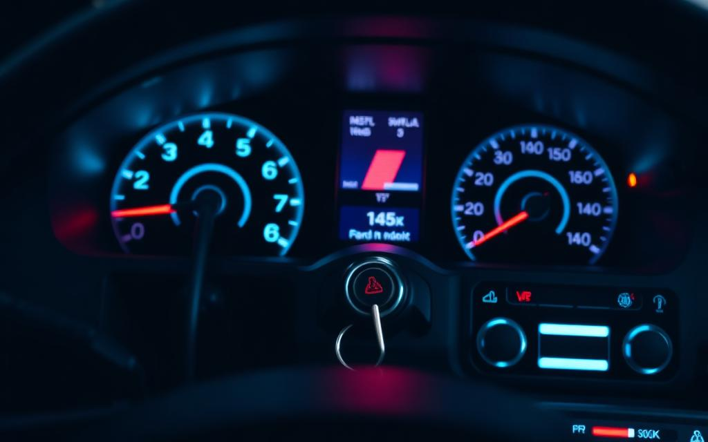
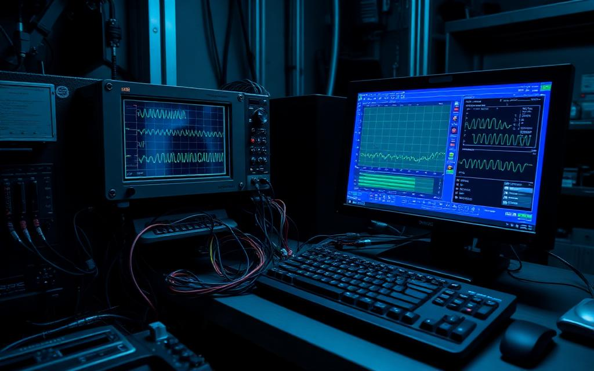

B.Tech — ECE
Electronics and Communication Engineering graduate with a strong foundation in electronics, microcontrollers and programming.
Open to opportunities
Passionate Electronics and Communication Engineering graduate focused on Embedded Systems, Automotive Software, ECU Validation, CAN Communication, UDS Diagnostics and ADAS technologies — building reliable software for the vehicles of tomorrow.
0+
Projects built
0+
Certifications
0+
Tools & protocols
0%
Curiosity
About
A professional summary of my background, focus areas and what I bring to an engineering team.
I am a B.Tech graduate in Electronics and Communication Engineering with a strong interest in Embedded Software Development, Automotive Electronics and ECU Testing. My work centres on Embedded C programming, microcontroller peripherals and automotive communication protocols such as CAN, CAN FD and UDS diagnostics.
I enjoy taking a system from schematic to validated software — writing firmware, building test cases in CAPL, and validating ECU behaviour on Vector CANoe. I am highly willing to learn new technologies and to contribute to innovative engineering teams working on next-generation vehicle software and ADAS.
Electronics and Communication Engineering graduate with a strong foundation in electronics, microcontrollers and programming.
Embedded C development on STM32 and Arduino platforms, working with UART, SPI and I2C peripheral drivers.
ECU testing, CAN / CAN FD networks, UDS diagnostic services and CAPL test automation using Vector tools.
Eager to adopt new technologies such as AUTOSAR and ADAS, and to contribute to innovative engineering teams.
Technical Skills
Core competencies across embedded development, automotive networking and validation tooling.
Projects
Hands-on projects spanning EV battery systems, vehicle power distribution, body control modules and automotive diagnostics.

Designed and implemented a battery management system featuring State of Charge (SoC) estimation, temperature monitoring, current sensing, cell balancing concepts and battery protection logic.

Developed a vehicle power distribution architecture covering battery load management, fuse protection, relay control, and power routing for automotive electrical subsystems.

Built a body control module interface managing door locks, interior lighting, window control, and wiper logic through microcontroller-driven I/O and switch inputs.

Simulated a CAN-based vehicle network integrating Q6C smart key authentication, push-button engine start, immobiliser logic, and keyless entry behaviour.

Implemented CAN communication and UDS diagnostic services using Vector CANoe and CAPL for ECU testing and automotive network validation.
Certifications
Continuous learning across automotive software, diagnostics and embedded development.
Professional Training Program
Vector Tool Training
Online Certification
Automotive Testing Course
MathWorks
Online Certification
Resume
Education, skills, projects and certifications — ready to download.
Automotive Embedded System Engineer and Automotive Testing Engineer specialising in Embedded C, ECU validation, CAN / UDS diagnostics and ADAS fundamentals.
Contact
Open to embedded software and automotive testing roles, internships and collaborations.